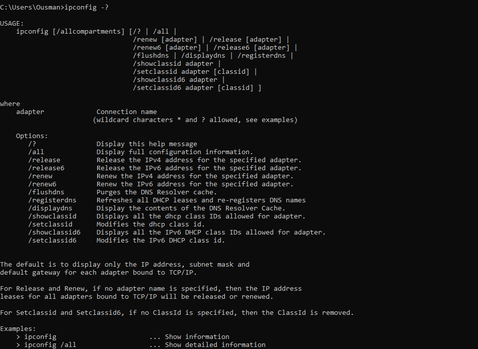
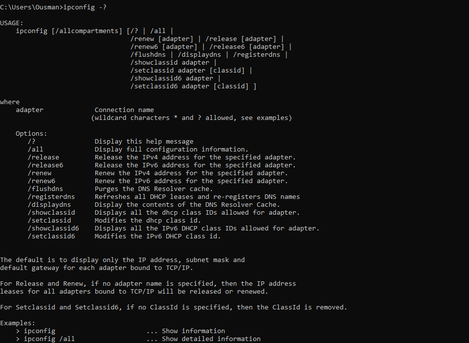
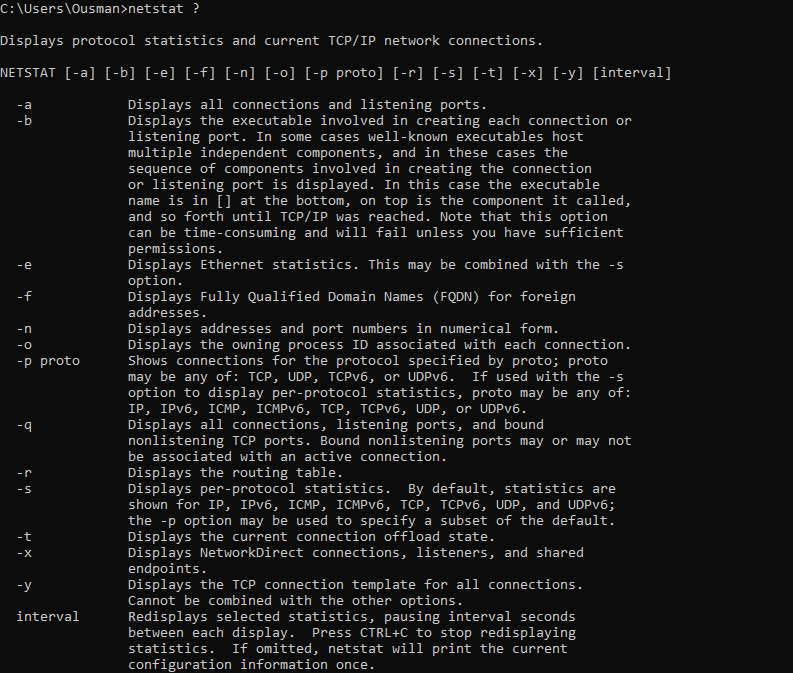
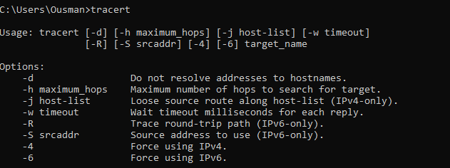
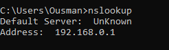

Course Code: ITEC442
Course Name: IoT and Cyber Security
Instructor: Beran Tanseloglu
Email: beran.tanseloglu@emu.edu.tr
This command displays systems network configuration.
Example: ipconfig, ipconfig all
 

This is a command used to test the reachability of a host on an Internet Protocol network.
Example: ping google.com, ping 192.168.2.0
The netstat command displays the contents of various network-related data structures for active connections (on your computer).
Example: netstat, netstat -a
This command display's the time it takes for a packet of information to travel between a local computer and a destination IP address or domain.
Example: tracert, tracert (domain name or ip address)
It is a network administration tool for querying the Domain Name System (DNS) to obtain domain name or IP address mapping or any other specific DNS record.
-type = record_type where record_type is a, cname, mx, ptr, ns and any
nslookup -type=ns domain_name
The whois command is used to find the contact information for a domain name or an IP address
Telnet is an old network protocol that is used to connect to remote systems over a TCP/IP network.
Its utility allows users to test connectivity to remote machines and issue commands through the use of a keyboard.
The mtr command is a combination of ping and traceroute commands. It is a network diagnostic tool that continuously sends
packets showing ping time for each hop. It also displays network problems of the entire route taken by the network packets.
The dig (domain information groper) command is a flexible tool for interrogating DNS name servers.
It performs DNS lookups and displays the answers that are returned from the queried name server(s).
Nmap is a network scanning tool, an open source Linux command-line tool—used for network exploration,
host discovery, and security auditing.
1. How many hops from your machine to your assigned website?
Traceroute to emu.edu.tr: 9 hops
2. Which step cause the biggest delay in the route? What is the average duration of that delay?
to gold-surf.com, 172ms
3. What are the main nameservers of that network?
ns1.emu.edu.tr
4. Who is the registered contact?
administrator.emu.edu.tr
5. What is the MX record for the website?
Non-authoritative answer: emu.edu.tr MX preference = 0, mail exchanger = emu-edu-tr.mail.protection.outlook.com
6. Where is the website hosted?
Not sure
1. Did you have any issues or challenges with the scans?
Yes, some command are not working on windows OS.
2. How did you overcome them?
I find some information on website's like whois.com, lookup.icann
3. How will they affect your final report?
It takes time before I can find the solutions